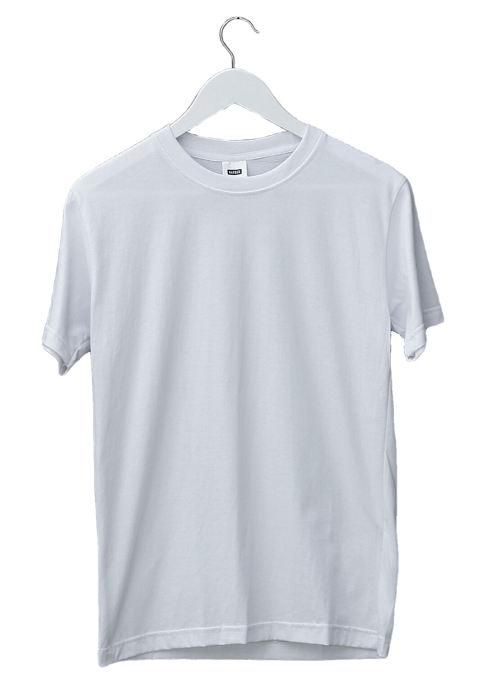

Com o CSS é possível adicionar sombras a elementos. Há três tipos de sombras:
text-shadowbox-shadowdrop-shadowUse a propriedade text-shadow para aplicar sombras a textos. Em sua forma mais simples, adiciona-se sombras ao eixo horizontal e ao eixo vertical. Por exemplo:
Efeito de sombra no texto
O próximo valor é a difusão da sombra:
Efeito de sombra no texto
Em seguida, aplica-se a cor:
Efeito de sombra no texto
Texto em preto com sombra vermelha
É possível adicionar várias sombras:
Texto com duas sombras
Outro texto com duas sombras
Se o texto for semi-transparente, a sombra pode ser vista através do texto:
Texto semi-transparente
Use box-shadow para aplicar uma ou mais sombras a elementos de bloco. Em sua forma mais simples, adiciona-se sombras aos eixos horizontal e vertical. Por exemplo:
O próximo valor é a difusão da sombra:
Em seguida, aplica-se a cor:
No caso de box-shadow, há ainda mais um valor que fica entre a cor e a difusão: o raio de espalhamento. Veja:
O parâmetro inset altera a posição da sombra para dentro do elemento:
Assim como os textos, elementos também podem ter várias sombras. Adicionar sombras a cartões faz com que pareçam um pedaço de papel colado à tela. Exemplo:
1
1º de janeiro de 2024
As propriedades border-radius e overflow: hidden também afetam a sombra do elemento.
drop-shadow()Para adicionar uma sombra a um objeto que não seja uma caixa, por exemplo, uma imagem, use o filtro drop-shadow(). Com isso a sombra segue as possíveis curvas de uma imagem. Essa sombra é aplicada a uma máscara alpha. Exemplo:

Diferente de box-shadow, este filtro não aceita os valores inset e de espalhamento.
É possível adicionar quantas sombras quiser, com várias ocorrências de drop-shadow. Cada sombra usará a anterior como referência para sua posição.